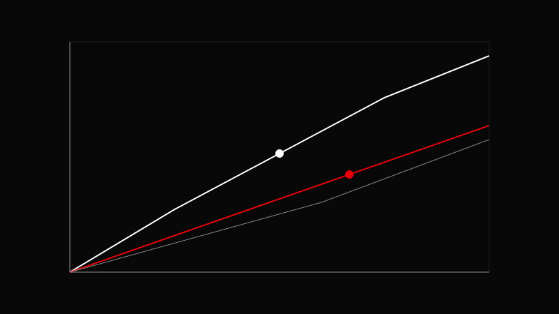

AVA CREATORS TOOLKIT · COLOR GRADING
CURVES
RGB and Luma
RGB and Luma

Use curves to refine, not replace, basic grading.
Add anchor points.
Adjust luma for contrast.
Use RGB for color shifts.
Check scopes.
S‑curves add cinematic contrast.
Over‑bending curves and creating artifacts.